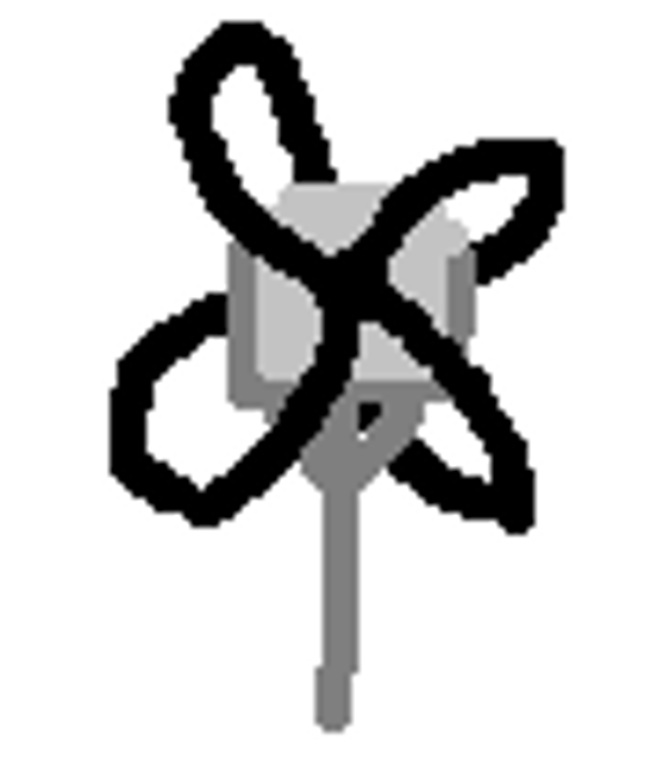

object / unnamed staff
□□□の杖

所在
004WaonJinkoku-betaの、広場に面した屋根のない建物に置かれている杖。資料上は「□□□の杖」と記載される。正式な読み、所有者、製作者は不明。
外観
灰色の柄と角張った中央部を持ち、その周囲で四つの黒い輪が重なっている。輪は正面から見ると花や交差した軌道のような形を作る。先端の向きは、黒い輪だけでは判別しにくい。
局所的な固定
柄の先を地面へ当てると、近くの床の継ぎ目や壁の形が一時的に変化しなくなることがある。固定された範囲は狭く、街区全体を安定させるほどの広さには及ばない。
何が固定されるかは一定していない。床を保てた一方で扉の位置が動く場合や、すでに変質した物の形がそのまま固定される場合がある。固定は元の状態への復元を意味しない。
使用と持ち出し
杖を地面から離すと、周囲の変化が再開することがある。持ち運ぶだけで保護されるとは確認されていない。柄を当て直しても、同じ範囲が再び固定されるとは限らない。
別の領域へ持ち出した事例は確認されていない。この杖を用いて外界への接続を作る方法も不明。
接近経路
beta領域の広場周辺で、四つの輪が刻まれた柱と、床の継ぎ目の変化が少ない建物を探す。帰路の境界から建物までの位置関係は固定されていないため、杖を見つけることと帰路を確保することは別に記録する。
未確認事項
固定が続く時間、対象を選ぶ方法、生物への作用、通常の杖や陣との関係。和温陣国の歴史級の杖に分類できるかも不明。